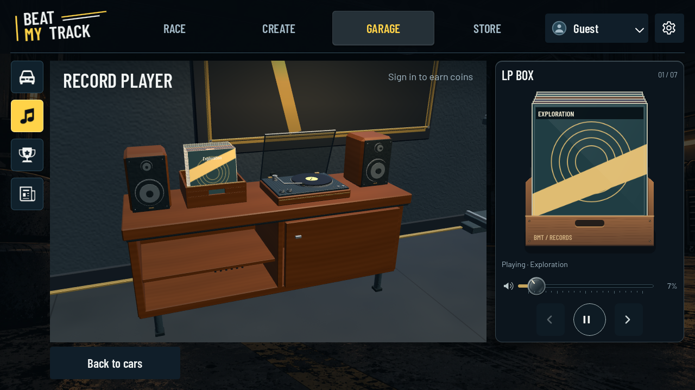
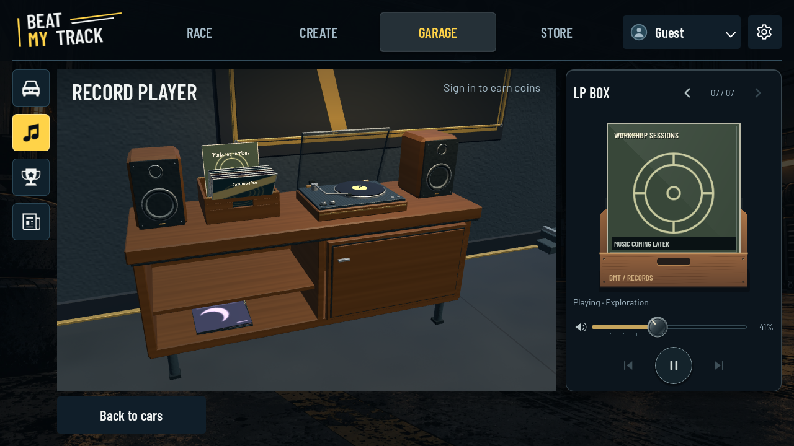
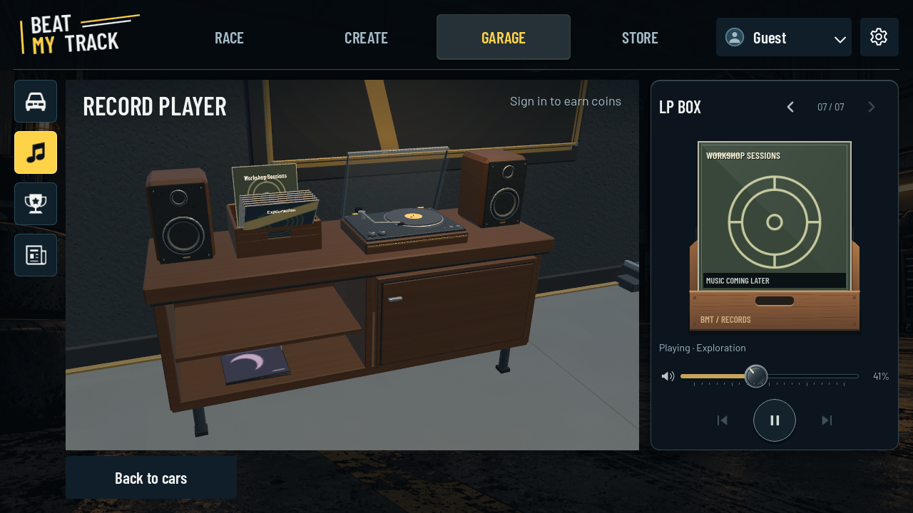

Garage player: finish and playback
24 October 2026 · GPF01–GPF03 / R01 / G01 / Q01. Actual Godot 4.7.2 renders and native input/audio, using isolated local records and no API.

Before · actual App · Compatibility
After · same renderer and sizeThe station now has modeled rolled speaker surrounds, recessed diaphragms/dust caps, a rolled platter edge and turned knobs, deeper smoked-lid sides, a framed cabinet door and a small seated jacket stack. Derivative-filtered organic walnut replaces repeated sine stripes. The closer listening camera keeps all feet in the native viewport at four sizes.
Playback correction
The persistent center button controls the actual named recording and retains keyboard focus and position while browsing. Header chevrons browse sleeves. Standard playback skip buttons exclude unreleased records and are disabled while Exploration is the only recording. Coming-later status sits on the unavailable sleeve, so the status beside the controls can identify what is really playing.
A stronger cursor test exposed a real restart bug: the original native run paused at 14.306s and resumed at 0.258s. A paused Godot player reports playing=false while retaining its playback. Settings application previously called play() again. The fix checks retained playback before starting a new decoder and unpauses the existing one; true cold starts are tested separately. The unchanged source-recording asset and preference format remain.
After correction, native Compatibility continues 20.045s → 20.288s and Mobile 17.357s → 17.592s. The actual pause glyph bounds center at (0,−0.5) pixels and play at (1,−0.5), measured inside the native button. Mouse, touch and keyboard activation, held cursor, continued cursor and never-started playback all pass.

Final desktop Mobile renderer · 1280×720 · 41% saved volume
960×540 · 1600×720 · 1720×914 · Paused control · Native sleeve-flip motion
Validation
| Check | Result |
|---|
| Focused actual App / controls / cursor / framing | 109 headless · 127 Compatibility · 127 desktop Mobile |
| Existing LP suite | 64 headless · 93 final desktop Mobile |
| Previous player App regression | 59 passed |
| Soundtrack lifecycle/settings | 1,158 passed after the audio fix |
| Existing App | 141 passed after the audio fix |
| GDScript parse / resource import | 1,109 scripts, zero failures · import passed |
The retained LP suite also records actual Music-bus WAV output: browsing remains audible, and pause becomes exactly silent after queued output drains. New and existing assertions cover all seven sleeves, direct gestures, unavailable-release safety, saves, stream identity, navigation, retained car/viewport/camera/condition and full UI/cabinet-foot bounds.
Corrections and limits
An initial combined native run retained eleven mouse-dependent failures; an unchanged standalone run passed. The final harness explicitly focuses its window after resize; a single cause was not proven. The new stronger cursor assertion then reproduced the real restart twice and remains intact. An initial synthetic cold-start fixture stopped a live player immediately before checking it; the same advance assertion now runs on the actual never-started player before App boot. All initial logs are retained.
All artwork and geometry changes are original repo-native code. No music, third-party raster assets, network dependency, viewport or light was added. The speaker profiles have fixed 48-segment radial detail, three static jacket-cover materials reuse existing textures, and the original blended lid gains physical side panels. Material/blending cost on physical devices is unmeasured. These renders support owner appearance review; they are not an AAA or device-performance certification.
Client reload and owner appearance/feel acceptance remain. No phone/tablet attachment check, physical-device test, APK export/install, owner-process restart, live account/backend mutation, purchase or deployment was performed. Concurrent work and the shared Git index are preserved.
Commands, runs and source hashes · Task-only Git patch · Lossless motion integrity. API reference: Godot retained playback API; behavior is independently verified on the pinned 4.7.2 runtime.